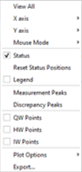

Partial Discrepancies
The Partial Discrepancies window displays the discrepancies between the loaded measurement data and the corresponding theoretical characteristics. Various partial discrepancies (for example, discrepancies for ellipsometric angles Psi and Delta) are displayed separately. To switch between different discrepancies, the corresponding tabs in the upper part of the window are used. Crosses correspond to the discrepancy values, and colored areas express deviations of measured values from the theoretical ones that correspond to zero baseline.
D = … presents the discrepancy value.

Clicking the right mouse button in the active Data Fitting window opens a popup menu providing access to the Chart Editor and the Export Chart, Save As, Print, and Copy operations.
